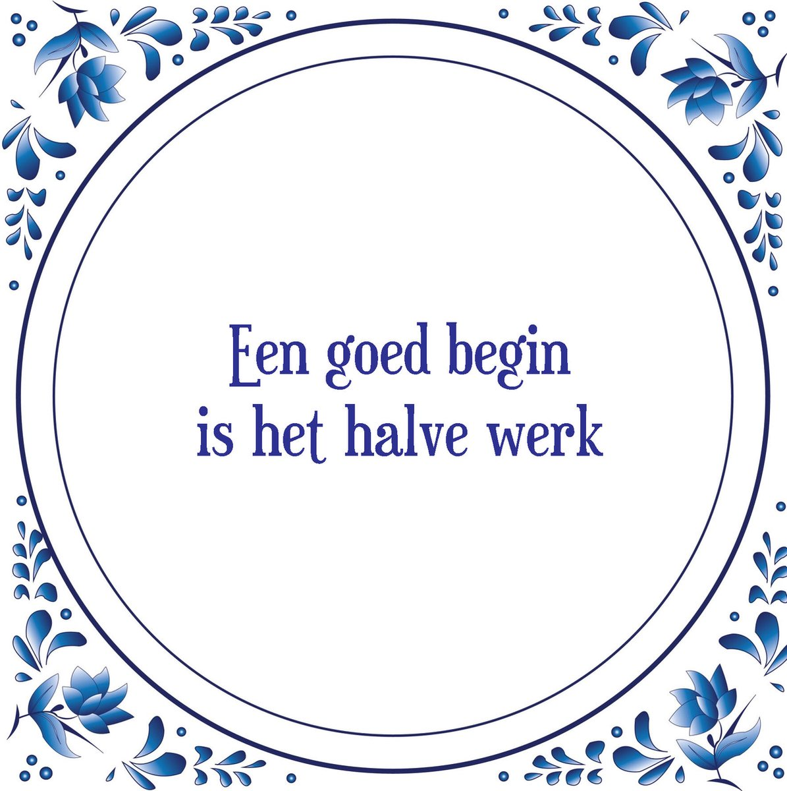

Een goed Begin is het halve Werk
"Een goed begin is het halve werk" wordt gebruikt om aan te geven dat een goede start bij een taak of project essentieel is voor het behalen van succes. Het impliceert dat een goede voorbereiding en start de helft van het werk al gedaan hebben.
Oorsprong
De oorsprong van dit spreekwoord ligt in het belang van een sterke start. Het idee is dat als je goed begint, je al een groot deel van het werk hebt voltooid, waardoor de rest van het proces gemakkelijker wordt.
Gebruik
Dit spreekwoord wordt vaak gebruikt om aan te moedigen tot een goede planning en voorbereiding voorafgaand aan een taak of project. Het wordt zowel in professionele als informele contexten gebruikt.
Voorbeelden
- Ze wist dat een goede voorbereiding essentieel was, want een goed begin is het halve werk.
- Door de projectplanning grondig te doen, zorgden ze voor een goed begin, wat het halve werk al gedaan had.
Vertalingen
Hoewel dit spreekwoord specifiek is voor de Nederlandse taal, zijn er vergelijkbare uitdrukkingen in andere talen. In het Engels wordt soms gezegd: well begun is half done (goed begonnen is half gedaan).